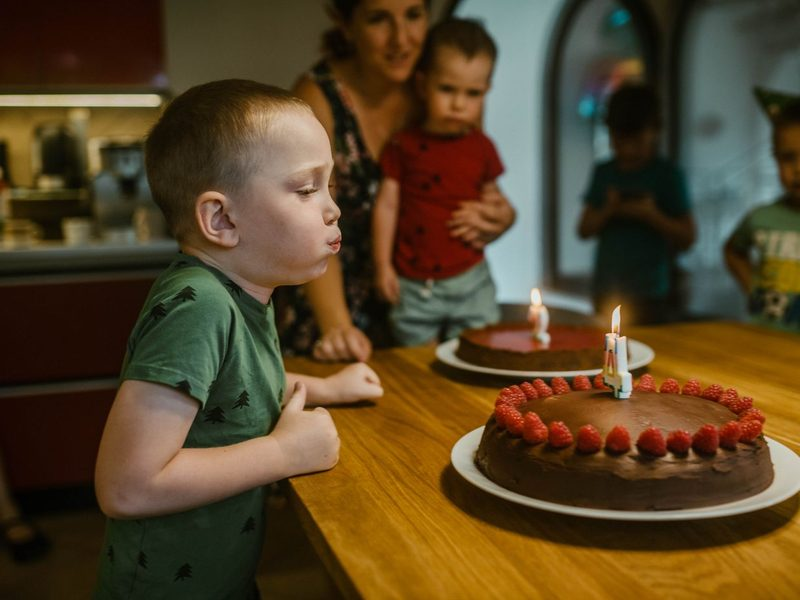
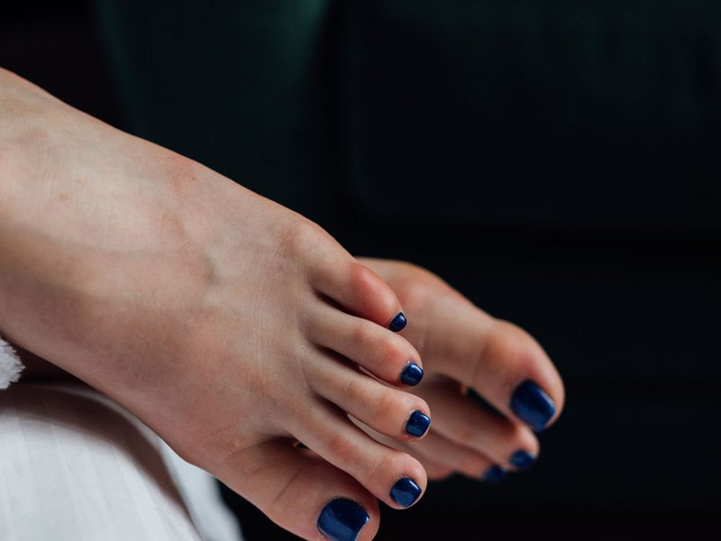
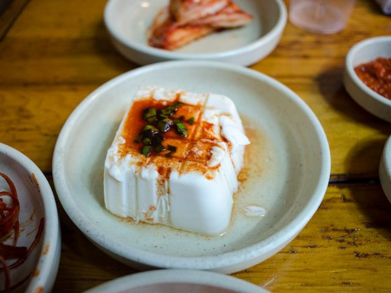
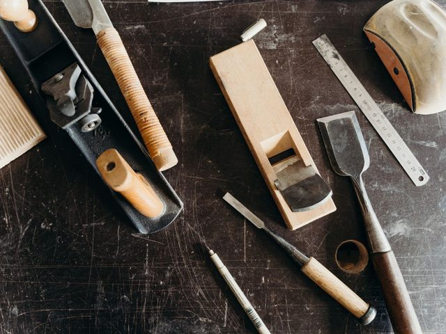
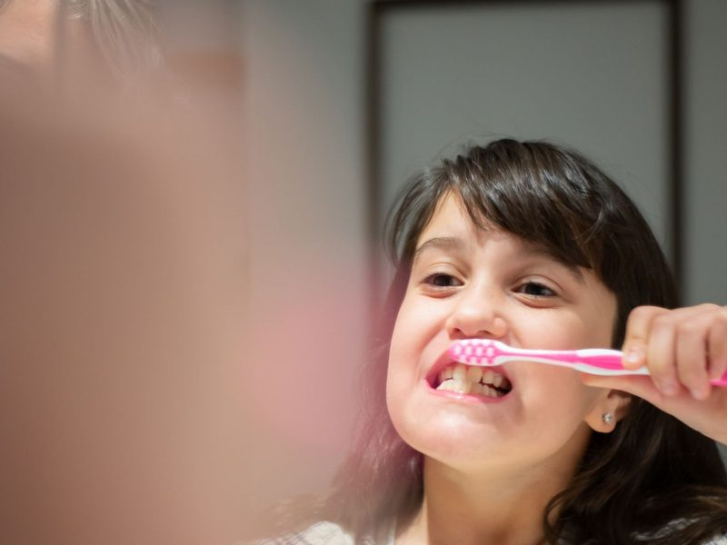
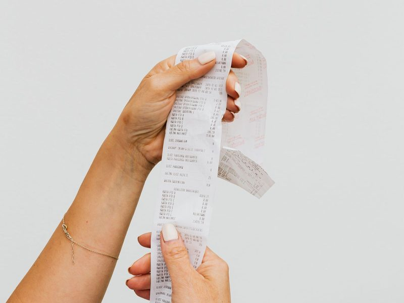
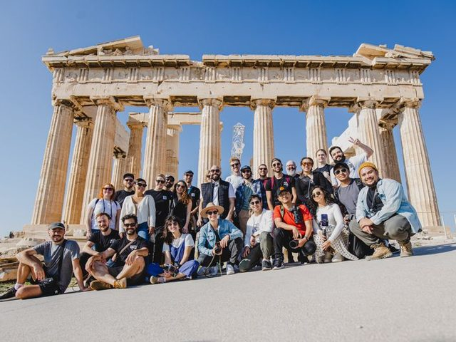
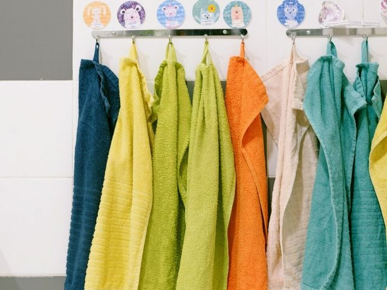
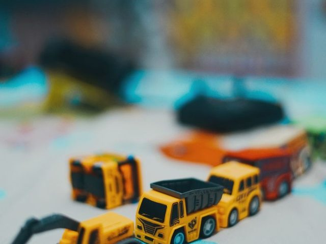

UNIT 49 · VOCABULARY
T 開頭（三）
T-III
35 個單字聽・唸・用
本單元單字一覽
WORD UP「T-III」的 35 個字（tiny 到 train）。紅色＝要複習，藍色標籤＝WORD UP 標熟記、還要在這裡考對。
tinytiptiredtitletoasttodaytoetofutogethertoilettomatotomorrowtonguetonighttootooltoothtoothachetoothbrushtoptopictotaltouchtourtoweltowertowntoytracetracktradetraditiontraditionaltraffictrain
每個字都有 🔊，先聽發音、跟著唸，再看例句。
單字 1–4

tiny
極小的adj.
The baby has tiny hands.
寶寶的手好小。
寶寶的手好小。

tip
小費；祕訣；尖端n.
Here are some tips for learning English.
這裡有一些學英文的祕訣。
這裡有一些學英文的祕訣。

tired
累的；厭倦的adj.
I'm tired of eating noodles.
我吃麵吃膩了。
我吃麵吃膩了。

title
標題；頭銜n.
What's the title of the book?
這本書的書名是什麼？
這本書的書名是什麼？
單字 5–8

toast
吐司n.
I had toast for breakfast.
我早餐吃吐司。
我早餐吃吐司。

today
今天adv./n.
What day is it today?
今天星期幾？
今天星期幾？

toe
腳趾n.
I hurt my toe.
我傷到腳趾了。
我傷到腳趾了。

tofu
豆腐n.
Stinky tofu smells bad but tastes good.
臭豆腐聞起來臭但吃起來香。
臭豆腐聞起來臭但吃起來香。
單字 9–12
together
一起adv.
Let's go together.
我們一起去吧。
我們一起去吧。
🚽
toilet
馬桶；廁所n.
Flush the toilet after use.
用完馬桶要沖水。
用完馬桶要沖水。

tomato
番茄n.
I put tomatoes in the salad.
我在沙拉裡放番茄。
我在沙拉裡放番茄。
🌅
tomorrow
明天adv./n.
See you tomorrow!
明天見！
明天見！
單字 13–16

tongue
舌頭n.
The dog stuck out its tongue.
狗伸出舌頭。
狗伸出舌頭。
🌙
tonight
今晚adv./n.
What are you doing tonight?
你今晚要做什麼？
你今晚要做什麼？
➕
too
也；太adv.
It's too hot to go out.
太熱了，不能出門。
太熱了，不能出門。

tool
工具n.
A hammer is a useful tool.
鐵鎚是很有用的工具。
鐵鎚是很有用的工具。
單字 17–20

tooth
牙齒n.
Brush your teeth twice a day.
一天刷兩次牙。
一天刷兩次牙。

toothache
牙痛n.
I have a toothache.
我牙痛。
我牙痛。

toothbrush
牙刷n.
I need a new toothbrush.
我需要一支新牙刷。
我需要一支新牙刷。

top
頂端；最高的n./adj.
We climbed to the top of the hill.
我們爬到山頂。
我們爬到山頂。
單字 21–24
💬
topic
主題；話題n.
What's the topic of your report?
你報告的主題是什麼？
你報告的主題是什麼？

total
總計的；總數adj./n.
The total cost is 500 dollars.
總費用是 500 元。
總費用是 500 元。

touch
觸摸；接觸v./n.
Let's keep in touch.
我們保持聯絡吧。
我們保持聯絡吧。

tour
旅遊；參觀n./v.
We took a tour of the museum.
我們參觀了博物館。
我們參觀了博物館。
單字 25–28

towel
毛巾n.
Dry your hands with a towel.
用毛巾擦乾手。
用毛巾擦乾手。

tower
塔n.
The tower is 500 meters tall.
那座塔有 500 公尺高。
那座塔有 500 公尺高。
town
城鎮n.
I grew up in a small town.
我在一個小鎮長大。
我在一個小鎮長大。

toy
玩具n.
The kids are playing with toys.
孩子們在玩玩具。
孩子們在玩玩具。
單字 29–32
👣
trace
痕跡；追蹤n./v.
The thief left no trace.
小偷沒留下任何痕跡。
小偷沒留下任何痕跡。
track
跑道；軌道；足跡n.
The runners are on the track.
跑者在跑道上。
跑者在跑道上。

trade
貿易；交換n./v.
Taiwan trades with many countries.
台灣和很多國家貿易往來。
台灣和很多國家貿易往來。

tradition
傳統n.
Eating dumplings is a tradition.
吃餃子是一種傳統。
吃餃子是一種傳統。
單字 33–35
traditional
傳統的adj.
She wore a traditional dress.
她穿著傳統服裝。
她穿著傳統服裝。

traffic
交通；車流n.
The traffic is heavy this morning.
今天早上交通很擁擠。
今天早上交通很擁擠。

train
火車；訓練n./v.
We went to Hualien by train.
我們搭火車去花蓮。
我們搭火車去花蓮。
重點整理
| 說法 | 中文 | 例子 |
|---|---|---|
| too + 形容詞 + to V | 太…而不能… | too tired to walk |
| be tired of | 厭倦… | tired of waiting |
| keep in touch | 保持聯絡 | Keep in touch! |
| on top of | 在…上面 | on top of the box |
| tradition / traditional | 傳統（名詞）／ 傳統的（形容詞） | an old tradition ／ traditional food |
| traffic jam | 塞車 | stuck in a traffic jam |
| in total | 總共 | 50 students in total |
tooth → teeth；tomato → tomatoes；traffic 不可數。
快問快答：中文 → 英文
1極小的tiny
2累的；厭倦的tired
3吐司toast
4腳趾toe
5一起together
6番茄tomato
7舌頭tongue
8也；太too
快問快答：英文 → 中文
1tooth牙齒
2toothbrush牙刷
3topic主題；話題
4touch觸摸；接觸
5towel毛巾
6town城鎮
7trace痕跡；追蹤
8trade貿易；交換
學完了！接下來
複習方法
review
- 回到「📗 單字卡」，按「遮中文」自己考自己
- 再按「遮英文」，看中文說出英文
- 每個例句跟著 🔊 唸一次
準備好了
- 按右上角「📝 前往測驗」
- 測驗錯的題目要訂正到全對
- 訂正完成補送 1 點